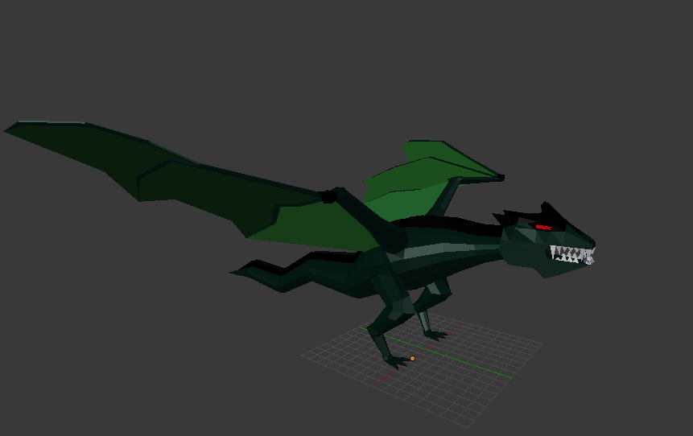

Dragón

Este es un dragón modelado con el programa Blender, la idea de este trabajo era modelar un dragón de forma low-poly, para incluirlo en un trabjo que consistia en realizar toda una isla low-poly. Este dragón era el elemento principal de la isla. Fui modelando este dragón por partes, es decir las piernas, las alas, la cabeza etc... son diferentes piezas que hice por separado para poder trabajar de forma mas centrada y luego junte las partes de forma uniforme.